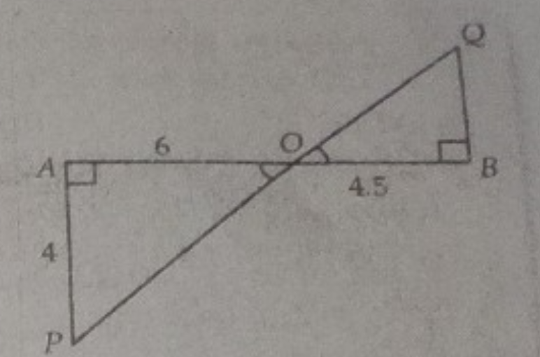
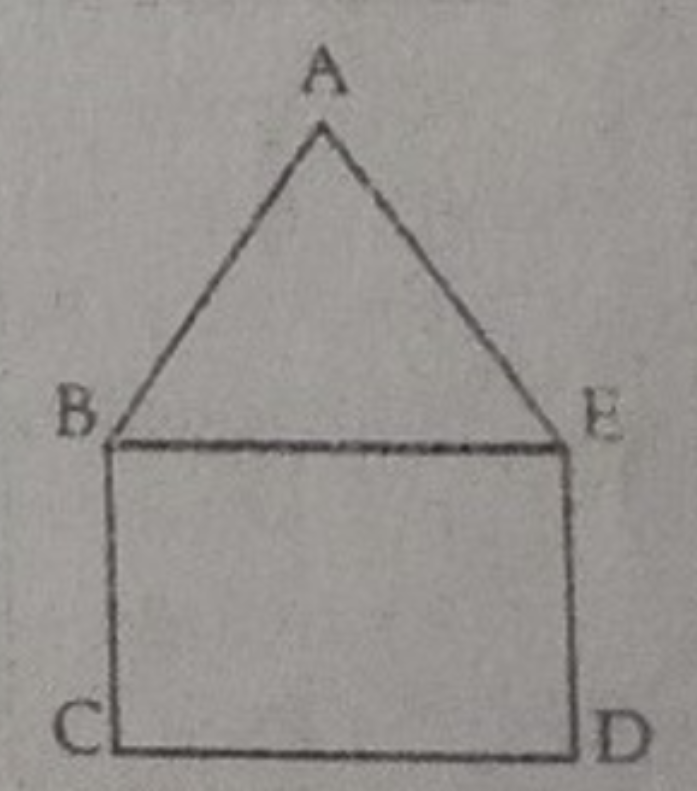
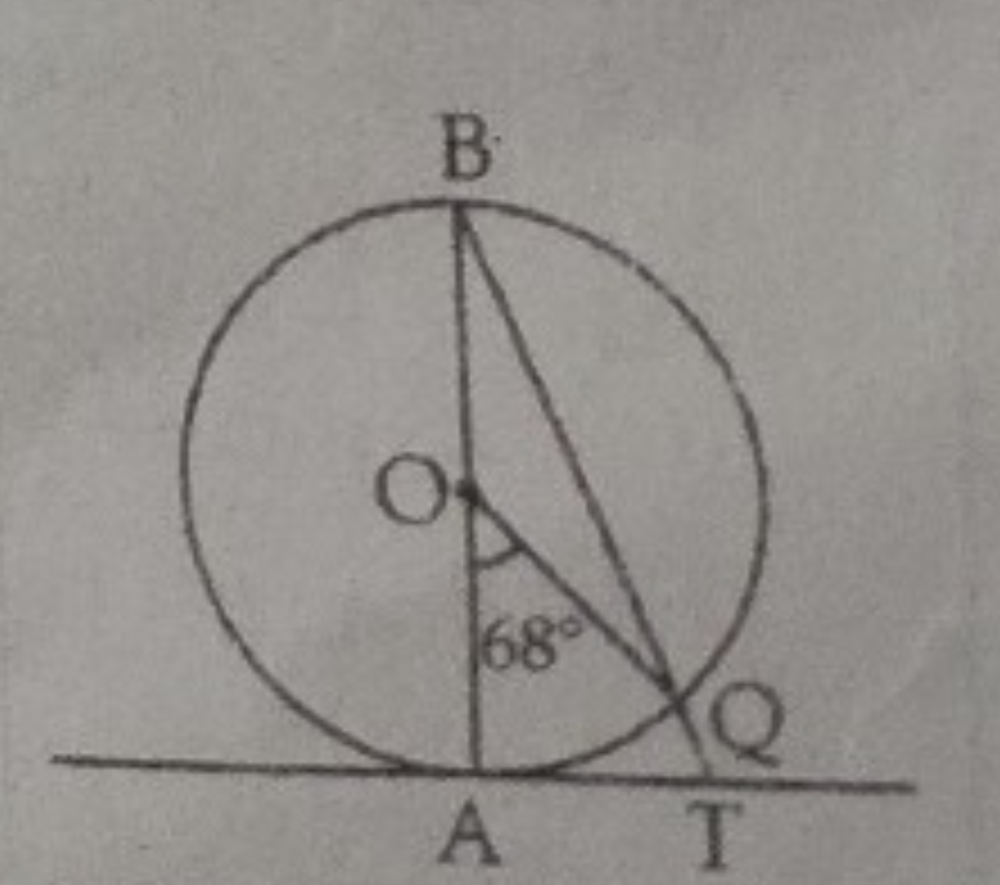
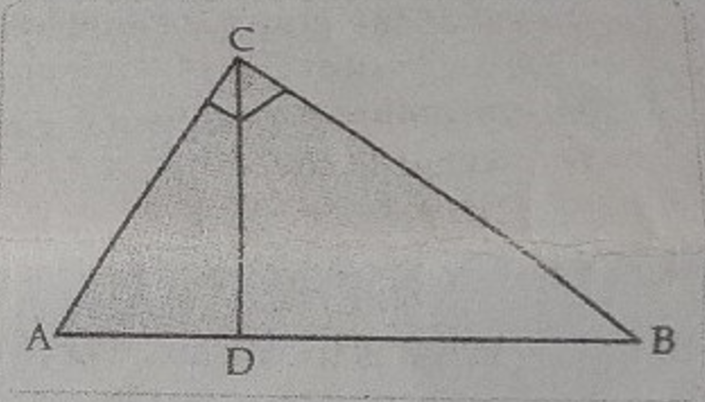

This question paper contains 38 questions. All questions are compulsory.
Question paper is divided into FIVE sections - Section A, B, C, D and E.
In Section A, question number 1 to 18 are multiple choice questions (MCQs) and question number 19
and 20 are Assertion-Reason type questions of 1 mark each.
In Section B, question number 21 to 25 are very short answer (VSA) type questions of 2 marks each.
In Section C, question number 26 to 31 are short answer (SA) type questions carrying 3 marks each.
In Section D, question number 32 to 35 are long answer (LA) type questions carrying 5 marks each.
In Section E, question number 36 to 38 are case based questions of assessment of competencies
carrying 4 marks each. Each case study is provided in 2 marks question in each case study.
There is no overall choice. However, an internal choice has been provided in 2 questions in Section
B, 2 questions in Section C, 2 questions in Section D and 3 questions in Section E.
Draw neat figures wherever required. Take π = 22/7 wherever required if not stated.
Use of calculator is not allowed.
SECTION - A
Let p and q be two natural numbers such that p > q. When p is divided by q, then remainder is r.
(i) r CANNOT be (p − q).
(ii) r CAN either be q or (p − q).
(iii) r is DEFINITELY less than q.
only (ii)
only (iii)
only (i) and (iii)
cannot be determined without knowing the values of p,q and r
The graph of a polynomial p(x) cuts the X-axis at 3 points and touches it at 2 other points. The number
of zeroes of p(x) is
1
2
3
5
If the discriminant of the equation 6x² − bx + 2 = 0 is 1, then value of b is:
7
-7
+7
None of these
What is the value of q if (1/2)p + 3q = 6 and 2p − 2q = 10?
1
4
6
16
If 7 times the 7th term of an A.P. is equal to 11 times its 11th term, then its 18th term will be
7
11
18
0
The distance of the point (20, 15) from origin is:
15 units
20 units
25 units
30 units
In what ratio, does the point (−4, 6) divide the line segment joining the points A(−6, 10) and B(3, −8)?
2 : 7
7 : 2
1 : 2
2 : 1
The area of the circle that can be inscribed in a square of side 3 cm is:
3π/2cm2
5π/4cm2
7π/2cm2
9π/4cm2
In the given figure, if TP and TQ are the two tangents to a circle with centre O such that ∠POQ = 110°,
then ∠PTQ is equal to:
60°
70°
80°
90°
If the sum of the circumferences of two circles with radii R₁ and R₂ is equal to the circumference of a
circle of radius R, then:
R₁ + R₂ = R
R₁ + R₂ > R
R₁ + R₂ < R
Nothing definite can be said about the relation among R₁, R₂ and R
sec θ when expressed in terms of cot θ is equal to:
1 + cos2 θ / cot θ
√1 + cot2 θ
√1 + cot2 θ / cot θ
√1 - cot2 θ / cot θ
If tan(5x + 30°) = 1, then x is:
15°
5°
3°
None of these
If sin A = 12/13, the value of cos A is:
13/4
13/5
5/13
4/13
If k + 2, 4k − 6 and 3k − 2 are three consecutive terms of A.P. then the value of k is:
3
-3
4
−4
The sum of the first n terms of an A.P. be 3n² + n and its common difference is 6, then its first term
is:
2
3
1
4
For an event E, P(E) + P(Ē) = 1, then the value of x² - 3 is:
−2
0
1
−1
Look at the numbers shown below:
(i) −0.5
(ii) 0.00001
(iii) ½
(iv) 1
(v) 1.00001
(vi) 99%
Which of the above numbers represent probabilities of events?
only (ii), (iii) and (iv)
only (i), (ii), (iii) and (iv)
only (ii), (iii), (iv) and (v)
only (ii), (iii), (iv) and (vi)
The empirical relation between the mode, median and mean of a distribution is:
Mode = 3 Median − 2 Mean
Mode = 3 Mean − 2 Median
Mode = 2 Median − 3 Mean
Mode = 2 Mean − 3 Median
Assertion (A): The area of a quadrant of a circle whose circumference is 22 cm is
77/8cm2. Reason (R): Area of a quadrant of a circle with radius r is πr2/4.
Both (A) and (R) are true and (R) is the correct explanation of (A).
Both (A) and (R) are true but (R) is not the correct explanation of (A).
(A) is true but (R) is false.
(A) is false but (R) is true.
Assertion (A):If the sum of first n terms of an AP is given by Sn = 6n + 7n², then its
nth term is 7n² − 8n + 1. Reason (R): nth term can use obtained using formula, an = Sn − Sn-1.
SECTION - C
Given that √2 is irrational, prove that (5 + 3√2) is an irrational number.
In the given figure, if ∠A = 90°, ∠B = 90°, OB = 4.5 cm, OA = 6 cm and AP = 4 cm, then find length of
QB.

Find the number of natural numbers between 102 and 998 which are divisible by 2 and 5 both.
If tan θ = 1/√5,
(A) Evaluate: cosec2θ - sec2θ
---------------------
cosec2θ
+ sec2θ
OR
(B) Verify the identity: sin²θ + cos²θ = 1
Show below are two overlapping sectors of a circle. The radii of the sectors are 6 cm and 8 cm. The
figure is divided into three regions – I, II and III.
Find the difference in the areas of regions I and III. Show your work.
(Note: Take π = 22/7)
OR
(B) The length of the minute hand of a clock is 6 cm. Find the area swept by it when it moves from 7:05
p.m. to 7:40 p.m.
SECTION - C
Find the greatest number of six digits exactly divisible by 18, 24 and 36.
If f(x) = x³ − ax² + (a − 3)x + 6, where a is a non-zero real number. When f(x) is divided by (x + 1),
there is no remainder.
If f(x) is completely factorable, find the zeroes of f(x). Show your steps.
(A) In the figure, ABCDE is a pentagon with BE || CD and BC || DE. BC is perpendicular to CD.
AE = AB = 5 cm, BE = x − y, CD = x − y and CD = x + y. If the perimeter of ABCDE is 27 cm, find the
value of x and y.

OR
(B) Determine graphically the co-ordinates of the vertices of triangle, the equations of whose sides are
given by
2y − x = 8, 5y − x = 14 and y − 2x = 1.
(A) In given figure, AB is the diameter of a circle with centre O and AT is a tangent. If ∠AOQ = 68°,
find ∠ATR.

OR
(B) If a circle touches the side BC of a triangle ABC at P and extended at Q and R
respectively, prove that
AQ = ½ (BC + CA + AB).
If tan(A + B) = 1 and tan(A − B) = 1/√3 (0° < A + B < 90°, A> B), then find the values of A and B.
The frequency distribution of daily rainfall in a town during a certain period is shown below:
Rainfall (in mm)
Number of days
0 - 20
10
20 - 40
x
40 - 60
12
60 - 80
8
Unfortunately, due to manual errors, the information on the 20–40 mm range got deleted from the
data.
If the mean daily rainfall for the period was 32 mm, find the number of days when the rainfall
ranged between 20–40 mm. Show your work.
SECTION - D
(A) Seven times a two-digit number is equal to four times the number obtained by reversing the order of
its digits. If the difference of the digits is 3, determine the number.
OR
(B) One says, "Give me a hundred, friend! I shall then become twice as rich as you". The other replies,
"If you give me ten, I shall be six times as rich as you". Tell me what is the amount of their
(respective) capital?
In the given figure, ∠ACB = 90° and CD ⊥ AB, prove that CD² = BD × AD.

(A) A right cylindrical container of radius 6 cm and height 15 cm is full of ice-cream. This ice-cream
has to be distributed to 10 children in equal cones having hemispherical shape on the top. If the height
of the conical portion is 10 cm, find the radius of the ice-cream cone.
OR
(B) A vessel is in the form of a hollow hemisphere mounted by a hollow cylinder. The diameter of the
hemisphere is 12 cm and the total height of vessel is 10 cm. Find the inner surface area of the vessel.
Find the unknown values in the following table:
Class Interval
frequency
Cumulative Frequency
0 – 10
5
5
10 – 20
7
x₁
20 – 30
x₂
18
30 – 40
5
x₃
40 – 50
x₄
30
SECTION - E
Read the passage below and answer the questions that follows:
Varun has been selected by his School to design logo for Sports Day T-shirts for students and staff. The
logo is designed in different geometrical shapes and different colours according to the theme. In given
figure, a circle with centre O is inscribed in △ABC, such that it touches the sides AB, BC and CA at
points D, E and F respectively.
The lengths of sides AB, BC and CA are 12 cm, 8 cm and 10 cm respectively.